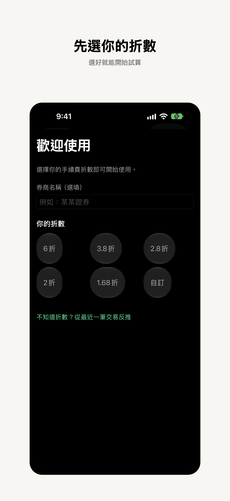
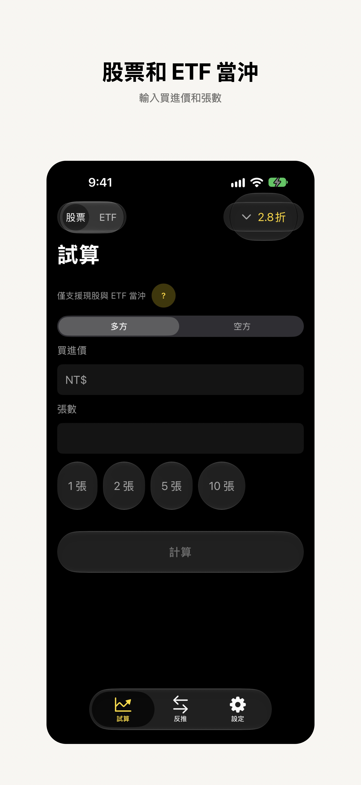
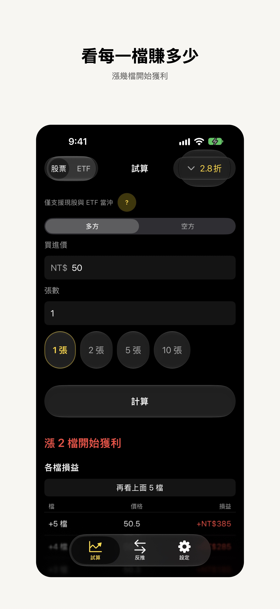
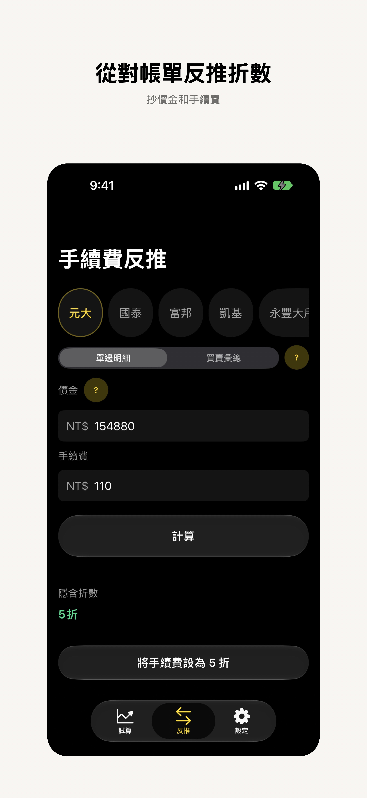
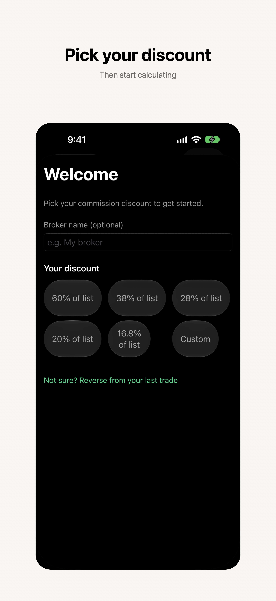
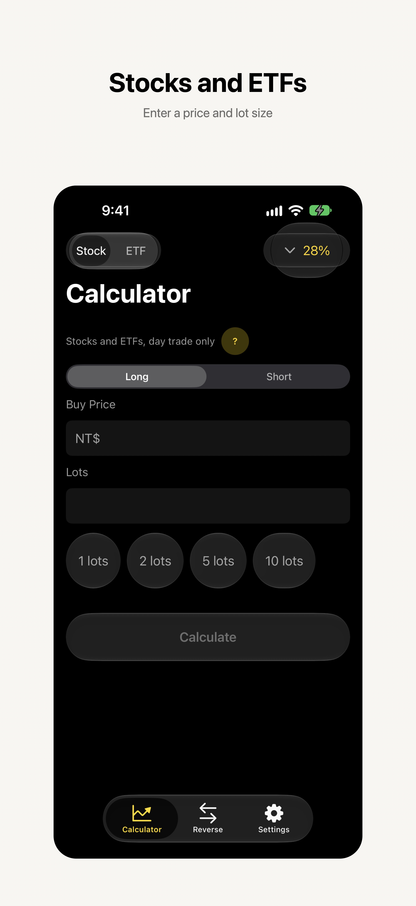
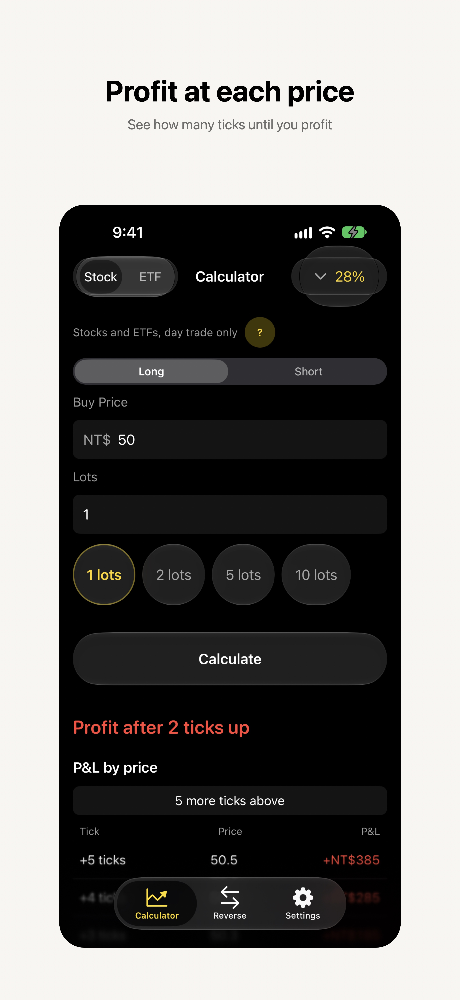
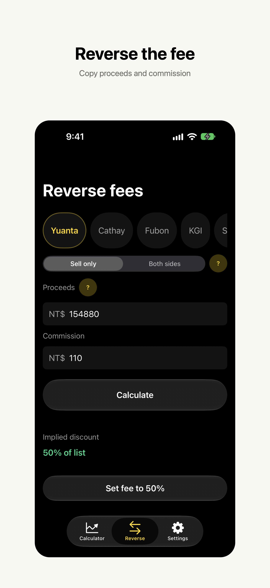

台股現股與 ETF 的當沖試算。輸入買進價和張數，看漲幾檔開始獲利；也可以從券商對帳單反推手續費折數。
操作說明
1. 選折數
第一次開啟時選一個常用折數。選完就進入試算。之後可從試算頁右上角的折數膠囊更改。

2. 試算
選股票或 ETF、多方或空方，輸入買進價和張數，按計算。結果寫出漲或跌幾檔開始獲利，表格列出每一檔的價格和損益。


3. 從對帳單反推
打開反推，點券商。單邊明細抄價金和手續費；買賣彙總再抄買進價金和手續費合計。不要填持有成本或損益。算出來可設成你的折數。

A day-trade calculator for Taiwan stocks and ETFs. Enter a buy price and lot size to see how many ticks until you profit, or reverse your fee discount from a broker statement.
How to use it
1. Pick a discount
The first time you open the app, pick a commission discount. You then land on the calculator. Change it later from the capsule at the top right.

2. Calculate
Choose Stock or ETF, Long or Short, enter the buy price and lot size, then Calculate. The result shows how many ticks until you profit, and P/L at each price.


3. Reverse a statement
Open Reverse and tap your broker. For a single-side statement, copy proceeds and commission. For a combined statement, also copy buy proceeds and the combined commission. Skip cost basis and P/L. You can save the result as your discount.
